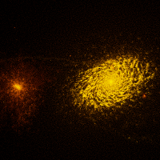

Initial Conditions
AGORA Disc
Isolated Milky-Way Like Disk Galaxy
 The AGORA disk initial conditions were generated as part of the AGORA
comparison project, and have been used in a number of simulation studies using many different simulation
codes. Here you can find the initial conditions in the Tipsy format that ChaNGa and gasoline both use.
The AGORA disk initial conditions were generated as part of the AGORA
comparison project, and have been used in a number of simulation studies using many different simulation
codes. Here you can find the initial conditions in the Tipsy format that ChaNGa and gasoline both use.
MUGS Suite
L* Galaxy Cosmological Zooms
 The McMaster Unbiased Galaxy Simulations (MUGS) are a series of cosmological zoom-in simulations of L* galaxies (such as the Milky Way). The MUGS simulations were originally reported in Bailin et al. 2010 Stinson et al. 2010, and were later re-simulated with updated hydrodynamics and sub-grid physics as MUGS2 in Keller et al. 2015 and Keller et al. 2016. Here you can find the initial conditions used for these studies in the Tipsy format that ChaNGa and gasoline both use.
Simulation Outputs
h277 g14 Galaxy Simulation
High-Resolution L* Galaxy Cosmological Zoom
h277 is a Milky Way-like galaxy, simulated with GASOLINE. h277 has been used in a number of studies, which you can find in this ADS Library. The dataset includes all of the outputs produced by the simulation code, along with a parameter file to re-run, halo finder outputs, and a movie of the simulation evolution. This simulation has a mass resolution roughly 10x greater than MUGS2. The data can be loaded and analyzed with pynbody. Make sure you've downloaded and unpacked all of the files and unpacked the .param file to allow pynbody to automatically infer units. The outputs of this simulation can be found in these 5 datasets: